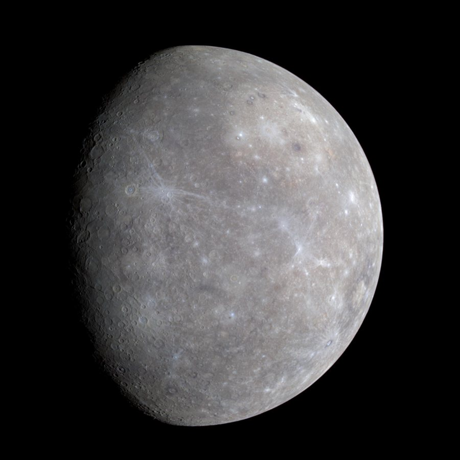

Mercúrio é o planeta mais próximo do Sol e o menor do Sistema Solar. Sua superfície rochosa e cheia de crateras lembra a da Lua. Como quase não tem atmosfera para reter o calor, seus dias são escaldantes e suas noites, congelantes.
De -180 °C à noite até 430 °C durante o dia
4.879 km de diâmetro
Entre 77 milhões e 222 milhões de km